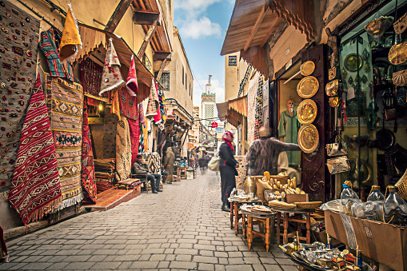
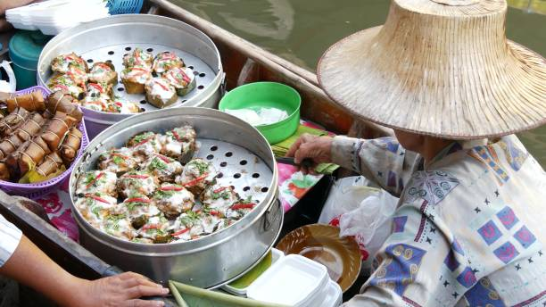

Our Trip to Leh Ladakh
Last updated on March 27, 2022
Julley from Leh! That means Hello in Ladakh and you’ll find that everyone here is itching to say it to you. Leh
is the super friendly mountain city that is waiting for you to visit them.When you arrive here, either by bus or
plane, you’ll be greeted by the most spectacular panoramic views of snow-capped mountains, ancient palaces and
Buddhist stupas.
It’s also a welcome paradise from the busy, dirty cities like Delhi and Rajasthan. Here’s the ultimate Leh
Ladakh travel guide including how to reach Leh, top things to do, where to stay and what to eat!
Best time to visit
This of course is the first question that comes to mind after you have finally decided to visit here. Ladakh
remains closed and cut off from the rest of the country for several months a year.
Most of the tourism here happens between the months of June and September . When should you plan will
depend on a
lot of factors like how you are traveling; if there is any budget restriction; what exactly do you want to see
etc.
How to prepare
Once you have decided when to go, next in line comes the question of how to prepare. Ladakh is not really a place where you can just pack your bags and go. You will have to seriously consider every aspect of the trip and pack accordingly. This will include packing the right kind of clothes, getting your vehicle ready, and carrying every essential item that you will need for the trip. Below is a link to articles where I have provided this information in detail.
What to buy in Ladakh?
Once you have reached Ladakh, you of course would not want to come back empty-handed. There is plenty to buy in
the markets here. The bazaars of Leh will mesmerize you with the superior artistry and sheer range of artifacts
on display.
The markets are stocked with fine products all year long, and you will lose track of time as you drift from one
store to another, lost in admiration.

Foods to try
One of the primary attractions of going to a new place is to have a taste of local food. The same is the case
with Ladakh. The local cuisine here is a fusion of Tibetan and Kashmiri dishes that you must get a taste of.
This mountain kingdom has been at the crossroads of trade between Tibet, Nepal, and Kashmir, and the delicacies
here clearly reflect the varied cultural influences.

What to see
The next piece of information that you should keep handy is a list of places that you would like to see. You have been told that the entire Ladakh is a tourist destination in itself which is entirely correct. Every turn of the road here will present you with something new and you will not get tired of clicking your camera for hours. But there must be some places that can be called the prime attraction, correct? You are right. In the articles below, I have listed every place in Ladakh that is worth a visit. Depending on the time you have for the trip, you can decide which one (or all of them) you want to cover. The first article provides a list of all the places in Ladakh while the other ones break it down by the region.
Why should you visit Ladakh?
You should visit Ladakh if you want to go on a trip that you will remember for life. It is truly one of a kind
experience that I must urge you to have. Ladakh is a place like no other and it has a little something for
everyone.
It does not matter if you were an adventure enthusiast, biker, photographer, family person, or just someone
looking to spend some time in peace, you can rest assured that Ladakh will not disappoint you.
Thank you for reading! Stay tuned for our upcoming travel tales 🤎